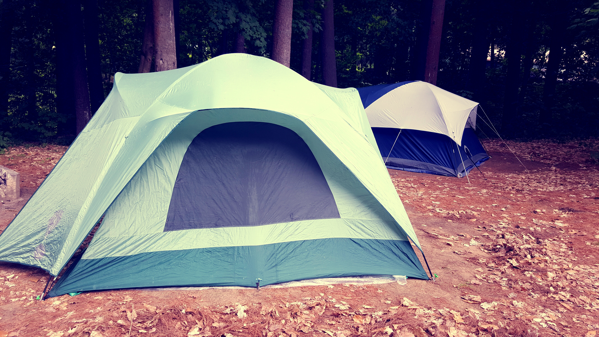
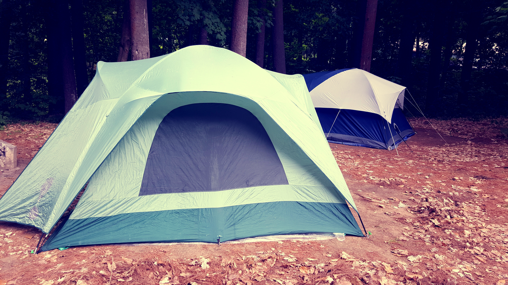

I have been homeschooled since second grade. It may seem like I didn’t get much social interaction, but really, I had an amazing homeschool group that I spent a lot of time with. I still am great friends with most of these people. Despite this, I was always a little shy. I frequently would have the right answer or a good idea and simply wouldn’t share. Homeschool was really beneficial for me though. My first-grade teacher told my parents that before the school year, I knew almost everything that they were going to teach, and that afterwards I had improved almost none. This is one of the main reasons I started homeschooling. I was able to learn much faster. Being homeschooled also allowed me to take dual credit starting at age 13. I did most of my classes online, but when I was 14 I went in-person to the community college. I looked really out of place in class, most people were 5-15 years older than me, but I didn’t really mind. I actually had multiple people ask me for help understanding concepts.
I did Boy Scouts from ages 8-14. Usually, it takes until almost 18 to get an Eagle Scout, however I worked extra hard and got it at 14. Scouts took countless hours of hard work, serving the community and learning life skills. One of the most important lessons I learned from scouting was how to talk in front of people. I had to do this for multiple classes and merit badges. I had a friend in scouts who was super talkative, but also clumsy. By being with him, I learned that you can make a lot of embarrassing mistakes, and people will still like you. I had always feared people not liking me for saying something wrong or not knowing something that “everybody knows” because I was homeschooled. Though this friend and experiences in scouting, I learned to be myself and not worry, which would help me a lot in jobs I had later.